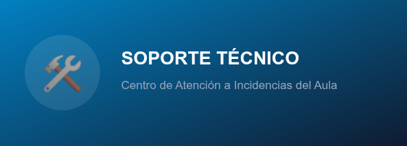

Pasos de Control Obligatorios Previos
- Verificar la conexión del cable de red Ethernet.
- Comprobar la asignación de dirección IP.
- Probar conectividad con la puerta de enlace mediante ping.

| Unidad (U) | Dispositivo | IP | Función |
|---|---|---|---|
| U3 | Switch Cisco | 192.168.1.2 | Distribución de red |
| U1 - U2 | Servidor BD Master | 172.16.0.10 | Base de datos principal |
| Servidor BD Replica | 172.16.0.11 | Base de datos réplica | |
| Advertencia: Conectado a línea de SAI de 3000VA. | |||